UNIKOO UNIKOO 为每次推荐提供 100% 佣金 100% 去中心化业务 只需 10 BUSD 即可轻松上手 全球前 5000 名参与者可免费获得 UNIKOO 代币 (UNK) APR 代币质押高达 120% UNIKOO在币安智能链上提供3种
UniLend Finance 无许可借贷流动性交易闪电贷治理 任何 ERC20 代币都可以在没有任何实体控制上市过程的情况下上市，从而使每个代币都可以访问 UniLend 的功能。 用户可以解锁其代币的
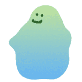 Unique Bubbles 只有 200,000 个 Bubbles 可以被个性化和生成以作为 NFT 收藏品铸造。 Dapp 由 blobs 应用开源代码开发，建立在 xDai 链（以太坊侧链）之上。 如果您曾经有机会拥有任何 Bubble，
Unite Finance Unite Finance 的灵感来自 tomb.finance，是 Harmony 主网上的第一个算法稳定币，通过铸币税与 1 ONE 的价格挂钩。 Tomb 在 Fantom 区块链上运行，并与 FTM 的价格 1:1 挂钩。 Tomb
United Dao 介绍 United DAO DEFI 的 NEXT EVOLUTION United DAO 是基于原生代币 UTD 的下一代去中心化协议。 United DAO 旨在通过为我们的利益相关者建立真正的信誉、强大的公司治理和积极的风险管理来开创
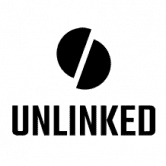 Unlinked UNLINKED 是一款在 Wax 上开发并以 22 世纪后期的未来太阳系为背景的赚取 RPG 多人纸牌游戏。 游戏的发展分为2个不同的叙事部分： 第 1 阶段（现已推出！） 打好你的牌，
UnusDao Unus 最初是一个基于 UDO 代币的去中心化储备货币协议。每个 UDO 代币都由 Unus 国库中的一篮子资产（例如 BUSD）支持，赋予其不能低于的内在价值。 Unus DAO 以 UDO 为基
USDC Farmer USDC Farmer 是一个基于 Avalanche 网络的 DApp。目标是比其他投资者更快地建立您的农场。作为回报，您将获得更多的 USDC。这些农场可以让您获得农场价值 7% 的每日
USDC MINTER 基于流行的 BNB Miner 项目，引入 Polygon – 稳定币变体 USDC Minter 是什么？ USDC Minter 不应与农场混淆。铸币厂不是被买来的，而是被雇佣的，因此不能被出售。一旦雇用了铸币者，他
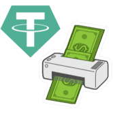 USDT Printer Money Printer Finance 是一个免费且不可变的开源智能合约USDT 打印机按当前打印效率每天支付 10%。随着您和其他玩家购买打印机、再投资打印的 UDST 和提取 USDT，
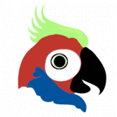 YoungParrot YoungParrot 是 Bitgert 链上的 NFT 市场，BRC20。我们将允许用户创建账户、创建收藏、开始上传 NFT 和出售/购买 NFT。用户可以将任何 NFT 添加到关注列表，将任何 NFT 共享
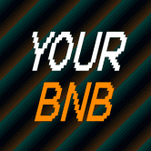 YourBNB 🔸🔸🔸🔸🔸🔸 🔥你的BNB🔥 🔸🔸🔸🔸🔸🔸 🔶新的 FASTEST 高产农业 dApp 🔶关于币安智能链 🔸🔸🔸🔸🔸🔸 🚀发布日期：04.04.2022 00:00 UTC+0 🔸🔸🔸🔸🔸🔸 投资条件
Ysoy Chain farm Ysoy 令牌 (Ysoy?) Ysoy没有采矿过程。Ysoy 的总固定供应量为 10000 YsoY 代币。Ysoy 代币协议由一组非竞争性、可互操作、去中心化和智能合约组成，这些合约由
Yugen Finance Yugen Finance 是一个 DeFi-Yield 聚合器，通过聚合各种举措的收入来产生资金。该平台还附带一个可在桌面和移动平台上使用的基本应用程序。这使得 Yugen Finance 成为第一个通过其他平
Yumcha Finance Yumcha 已完成概念验证阶段，并正在微调我们的方法，以根据反馈和实际结果为我们的用户提供最佳体验。 Yumcha 是一种去中心化金融，由 BSC 网络上的智能合约提供支持
YumiSwap 即时交换代币：无需注册或账户。只需连接您的 MetaMask 钱包即可。 YumiSwap 是一个供用户交易、赚钱和游戏的加密世界。它是 ASTAR 上具有 AMM、NFT 和 GameFi 等功能的项目的
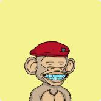 Yung Ape Squad Official 每只 Yung Ape 都是独一无二的，并经过精心设计，与它的专属主人建立了情感纽带。与其他衍生设计不同，Yung Apes 的每一个组合都经过了广泛的审查过程，从而
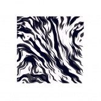 Z-Huge by MountVitruvius Z-huge 是我的第一个区块链项目。以诸葛亮的机器牛命名。 让这项工作的每一个输出都感觉特别，同时从相同的代码无休止地生成，这是一个真正的挑战。对于之前
Zappy Zappy 是 Telos 网络的自动做市 (AMM) 去中心化交易所 (DEX)。 Zappy 正在 Telos 上为 DeFi 构建一站式生态系统，从 DEX 本身、ZAP 治理令牌和多样化的收益农业机会开始。在 24 小
ZCore Finance 尽早获得获得 ZEFI 的高收益 DeFi 农场协议。 强大可靠的开发团队。立即加入！ ZCore Finance - 良种农业提供流动性、质押 LP 并在通缩代币 ZEFI 中获得即时奖励 Feeless ZEFI 和其他 ZCore 代币
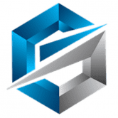 ZEDXION ZEDXION 加密货币交易所 在过去 24 小时内的交易量超过 1B 美元。您可以交易 83 个加密货币对。您可以使用 USDT 等流行的加密货币交易加密货币。 现货、合约、IEO、E
Zendodo Party Zendodo 派对 (https://zendodo.io) 是 WAX 区块链上的游戏/NFT-fi，让英雄有机会将 Zendodos 聚集到他们的派对中，同时获得丰厚的回报。 Zendodos 是我们在 Dodoland 中的可爱小动物，随着英雄的进化
Zenlink Zenlink 是基于 Polkadot 的底层跨链 DEX 协议，致力于成为 Polkadot 的 DEX 可组合枢纽。 Zenlink DEX 协议通过接入基于 Substrate 的终极、开放、通用的跨链 DEX 协议，使所有平行链能够一键构建 DEX 并实
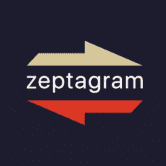 Zeptagram Zeptagram 是一个基于区块链的交易平台，知识产权所有者可以将他们的资产标记为 NFT 和 dNFT。 Zeptagram 的目标是成为领先的音乐和知识产权交易交易所。早期投资者有机
Zest Protocol Zest Protocol 使用三种不同的代币来允许用户投机基础资产，同时获得被动收入。 ZSP（Zest 合成协议令牌） ZPS 是 Zest 协议实用代币，参与者通过该代币获得协议产
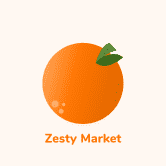 Zesty Market Zesty Market 实现了虚拟世界中数字空间的货币化。 作为创作者，您可以铸造代表网站、直播或游戏中的数字横幅的 NFT。 广告商可以租用 NFT 以获得修改出现在环境中
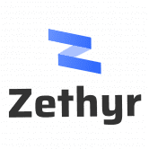 Zethyr DEX Aggregator Zethyr DEX 聚合器是一个完全去中心化的应用程序，它聚合不同的 DEX 和掉期以提供最佳汇率。立即以最优惠的价格、零费用交换 TRON 代币。 Zethyr DEX Aggregator 是一个用于交换基于 TRON
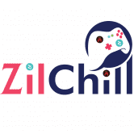 ZilChill ZilChill 游戏平台提供去中心化预测市场、实时体育预测、多人 Ludo Dice 等。利用 REDC 代币，用户可以托管（创建）游戏并使用 ZIL 代币进行游戏。 ZilChill由Red
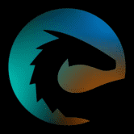 ZilPay Wallet ZilPay Wallet 是 zilliqa 区块链上的开源钱包去中心化应用程序。生态系统中的每个 Dapp 都从 ZilPay 中受益，因为它们围绕它构建 用于 zilliqa 区块链的 ZilPay 浏览器扩展 该扩展将 Zilliqa web3 API 注入到
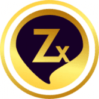 Zinax DAO ZinaX 是一个建立在区块链上的高收益储蓄和投资平台。 ZinaX 使您能够节省加密资产的资金。这些储蓄和投资选择使您能够从股息和利息中获得被动收入。 ZinaX 由 Zinari Finance 构
Zipcy's SuperNormal Zipcy 是 8,888 个生成 NFT，通过描绘多样化和独特的元素并包含各种人类身份和情感来代表个人主义。 Zipcy’s 由一个 6 人团队组成，包括艺术家、运营、开发人员和网页